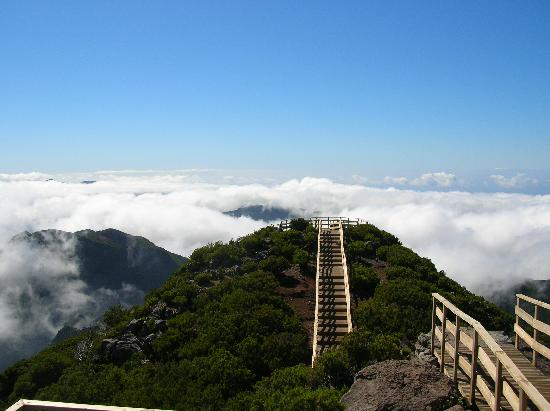
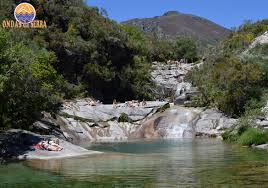
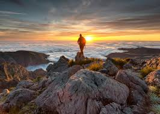
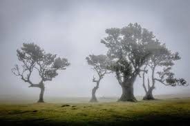
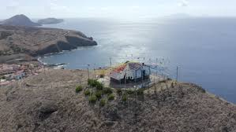
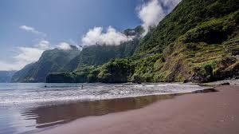

Sobre Nós
Somos uma pequena empresa local da Madeira, criada a partir do amor pela ilha, pela natureza e pelos nossos cães. Aqui não há grandes equipas nem turismo em massa — somos apenas eu e os meus companheiros de quatro patas, a partilhar experiências autênticas com quem nos visita.
Os nossos passeios são pensados para quem quer conhecer a Madeira de forma tranquila, verdadeira e próxima da natureza. Caminhamos por trilhos, paisagens e recantos especiais da ilha, sempre com tempo para apreciar, sentir e viver o momento — ao ritmo das patas e dos passos.
Os cães fazem parte da experiência. São calmos, bem cuidados e habituados a acompanhar pessoas, trazendo leveza, alegria e uma ligação especial ao caminho. Para muitos visitantes, tornam-se rapidamente parte da família durante o passeio.
Acreditamos num turismo responsável, local e respeitador do ambiente. Cada passeio é único, adaptado a quem nos acompanha, e feito com carinho, segurança e atenção aos detalhes.
Mais do que um passeio, oferecemos uma experiência simples, genuína e memorável — Madeira, natureza e companhia verdadeira.
Missão
A nossa missão é proporcionar experiências únicas e genuínas na Madeira, combinando a beleza natural da ilha com a companhia dos nossos cães. Queremos que cada passeio seja mais do que um simples tour: que seja um momento de conexão com a natureza, com os animais e com a cultura local.
Valorizamos o turismo responsável e personalizado, onde cada visitante é acompanhado com atenção, cuidado e carinho. Acreditamos que pequenas experiências, feitas com paixão e dedicação, criam memórias duradouras e fortalecem o amor pela Madeira e pelos seus recantos escondidos.
Nosso objetivo é simples: mostrar a ilha de uma forma autêntica, divertida e inesquecível, sempre na companhia dos nossos fiéis companheiros de quatro patas.
Os nossos lugares preferidos
Na nossa pequena aventura pela Madeira, fomos descobrindo cantinhos que nos encantam e que adoramos partilhar com quem nos acompanha. Cada trilho, cada miradouro e cada recanto tem uma história, uma paisagem ou um cheiro especial que nos faz sentir em casa.
Desde levadas escondidas rodeadas de vegetação verdejante até pequenas praias e falésias com vistas de cortar a respiração, cada lugar escolhido reflete o que mais amamos na ilha: natureza, tranquilidade e autenticidade.
Os nossos cães também têm os seus favoritos: sítios onde podem correr livremente, explorar novas trilhas e sentir a brisa do mar. A companhia deles torna cada passeio ainda mais especial e inesquecível.
Queremos que os nossos visitantes conheçam a Madeira de forma genuína, sentindo a magia destes lugares que para nós são verdadeiros tesouros, e que levem consigo memórias que vão durar muito mais do que uma simples viagem.
Favorito do Pedro
Pico Ruivo
Aventura até o ponto mais alto da Madeira, com vistas de cortar a respiração.
Mais InformaçãoFavorito da Cookie
Chão das Aboboreiras

Um recanto mágico da Madeira, rodeado de vegetação e tranquilidade, perfeito para relaxar e explorar.
Mais InformaçãoFavorito da Koffee
Sete Lagoas
Um conjunto de lagoas serenas no Paul da Serra, perfeito para trilhos e fotos inesquecíveis.
Mais InformaçãoCoisas que mais gostamos de fazer
Adoramos explorar cada recanto da Madeira, sentir a brisa do mar, percorrer trilhos escondidos e descobrir paisagens que nos deixam sem fôlego. Nada nos deixa mais felizes do que passar tempo na natureza, com os nossos cães a correrem livremente ao nosso lado, cheirando cada trilha e fazendo novos amigos pelo caminho.
Gostamos de momentos simples: caminhar por levadas verdejantes, descansar junto a uma lagoa tranquila, admirar o pôr do sol em miradouros secretos e partilhar sorrisos com quem nos acompanha. Cada experiência é feita com paixão, curiosidade e respeito pelo ambiente, transformando cada passeio numa memória inesquecível.
As nossas experiencias favoritas
Favorito do Pedro
Amanhecer no Pico Ruivo
Desperta com a Madeira aos teus pés e o nascer do sol a iluminar montanhas e vales.
Mais InformaçãoFavorito da Cookie
Fanal com Nevoeiro
Mergulha na magia da Laurissilva, onde o nevoeiro transforma o Fanal num cenário encantado.
Mais InformaçãoFavorito da Koffee
Catamaran

Navega pelas águas cristalinas da Madeira e descobre a costa com aventura e tranquilidade a bordo de um catamaran.
Mais InformaçãoAtrações Preferidas
A Madeira não é só natureza — também adoramos explorar a sua história e cultura. Caminhar pelas ruas coloridas do Funchal, descobrir monumentos antigos, visitar igrejas e centros históricos, ou perder-nos nos mercados e praças, é uma forma de sentir a alma da ilha.
Cada cidade, vila ou monumento revela histórias únicas e tradições que nos encantam. Para nós, estas experiências são tão especiais quanto os trilhos e as paisagens: combinam cultura, arquitetura e momentos inesquecíveis que vale a pena partilhar.
Favorito do Pedro
Capela da Nossa Senhora da Piedade
Uma pequena joia histórica da Madeira, cheia de charme e mistério na ponta da ilha.
Mais InformaçãoFavorito da Cookie
Miradouro Bica da Cana

Um miradouro tranquilo nas alturas da Madeira, com vistas amplas sobre montanhas e vales.
Mais InformaçãoFavorito da Koffee
Praia do Seixal
Uma praia de areia negra rodeada por falésias verdes e mar cristalino, um dos cenários mais bonitos da Madeira.
Mais InformaçãoDestaques

A Madeira ganha uma nova experiência cheia de adrenalina com a chegada da zip line, uma atração que combina aventura, natureza e vistas deslumbrantes. Suspenso sobre paisagens únicas da ilha, este percurso oferece uma perspetiva diferente e emocionante, permitindo sentir a liberdade e a velocidade enquanto se desliza entre montanhas e vales.
Pensada para quem procura algo fora do comum, a zip line é uma excelente forma de explorar a Madeira de uma maneira divertida e inesquecível. Seja para os mais aventureiros ou para quem quer experimentar algo novo, esta é uma experiência que promete marcar a visita à ilha e criar memórias cheias de emoção.